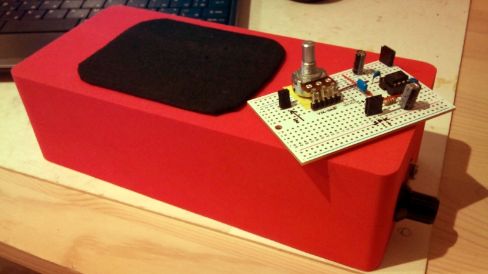

Version 3 Info
Based around a LM386 amplifier (in my case a JRC 386), the idea was to make it for a guitarist colleague, and also for myself maybe.... continued from Smokey amp vII
20110601:
 made a version 3, using the excellent schema of M. Dino Segovis on hackaweek. All soldered on the chip, so less EMF sensitivity, less size and ... well I just wanted to do it. Speaker is better stuff and in the end this amp turns out to be quite good with a very clear sound!
made a version 3, using the excellent schema of M. Dino Segovis on hackaweek. All soldered on the chip, so less EMF sensitivity, less size and ... well I just wanted to do it. Speaker is better stuff and in the end this amp turns out to be quite good with a very clear sound!20150111: My wife needed a small amplified speaker for her studies: 4 hours later she gets it in a nice box. Same circuit, working just fine.
Schema
Points of attention:
① This circuit is and will remain sensitive to static, so if you're up high close ot a radio emitter or if you have your cellephone close you might get blips! or static or even the radio. Careful shielding should do the trick but I never cared enough to try.
② Do not skip the RC branch composed of the 0.047uF & 10ohm resistor: it will work without but it sounds so much better with. Why, I never cared to search for but it's a fact (tested and approved).

Version 3, the best that sounds very clear. The trick : everything is soldered on the chip and glued for safety!
A very big thank you to M. Dino Segovis for this schema on Hackaweek!
The big red one is a very dense foam bought at TokyuHands, very easy and fun to work with. Bought a brick and just cut through with a solid cutter and pliers. The other version bread-board like has same issues as others (you can hear the radio) but it's just for prototyping.
Links
- The best, with LM386 http://hackaweek.com/hacks/?p=131
- Very nice tutorials on the amps http://www.electronics-tutorials.ws/amplifier/amp_1.html